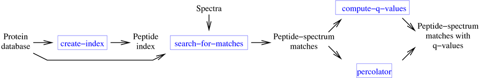

 Crux is a software toolkit for tandem mass spectrometry analysis. If you use Crux in your research, please cite
Christopher Y. Park, Aaron A. Klammer, Lukas Käll, Michael J. MacCoss and William Stafford Noble. "Rapid and accurate peptide identification from tandem mass spectra." Journal of Proteome Research. 7(7):3022-3027, 2008.For a more up-to-date description of Crux, please read
Sean McIlwain, Kaipo Tamura, Attila Kertesz-Farkas, Charles E. Grant, Benjamin Diament, Barbara Frewen, J. Jeffry Howbert, Michael R. Hoopmann, Lukas Käll, Jimmy K. Eng, Michael J. MacCoss and William Stafford Noble. "Crux: rapid open source protein tandem mass spectrometry analysis." Journal of Proteome Research. 13(10):4488-4491, 2014.Download Crux Toolkit Crux is provided as a single executable that supports the following commands:
Primary commands bullseye Assign high resolution precursor m/z values to MS/MS data using the Hardklör algorithm. tide-index Create an index of all peptides in a fasta file, for use in subsequent calls to tide-search.tide-search Search a collection of spectra against a sequence database, returning a collection of peptide-spectrum matches (PSMs). This is a fast search engine but requires that you first build an index with tide-index.comet Search a collection of spectra against a sequence database, returning a collection of PSMs. This search engine runs directly on a protein database in FASTA format. percolator Re-rank a collection of PSMs using the Percolator algorithm. Optionally, also produce protein rankings using the Fido algorithm. q-ranker Re-rank a collection of PSMs using the Q-ranker algorithm. barista Rank PSMs, peptides and proteins, assigning a confidence measure to each identification. search-for-xlinks Search a collection of spectra against a sequence database, finding cross-linked peptide matches. spectral-counts Quantify peptides or proteins using one of three spectral counting methods. Utilities calibrate-scores Assign two types of statistical confidence measures (q-values and posterior error probabilities) to each PSM in a given set. make-pin Given a set of search results files, generate a pin file for input to crux percolatorpredict-peptide-ions Given a peptide and a charge state, predict the m/z values of the resulting fragment ions. hardklör Identify isotopic distributions from high-resolution mass spectra. print-processed-spectra Process spectra as for scoring xcorr and print the results to a file. generate-peptides Extract from a given set of protein sequences a list of target and decoy peptides fitting the specified criteria. get-ms2-spectrum Extract one or more fragmentation spectra, specified by scan number, from an MS2file.version Print the Crux version number to standard output, then exit. Utilities for processing tab-delimited text files extract-columns Print specified columns from a tab-delimited file. extract-rows Print specified rows from a tab-delimited file. stat-column Collect summary statistics from a column in a tab-delimited file. sort-by-column Sort a tab-delimited file by a column. File formats
bullseye tide-index tide-search comet percolator q-ranker barista search-for-xlinks spectral-counts MS1 in MS2 (sample) / CMS2, MGF in/out in in in in in in in mzML, mzXML in in in in in in in in Thermo .raw files (Windows only) in in in in in in in Other proprietary vendor formats (Windows only) in in in in in FASTA (sample) in in in in database index out in Tab-delimited text (sample) out out in/out in/out in/out out in/out pepXML out out in/out out out in PIN out in POUT out mzIdentML out out out in SQT out out in in in in Features in/out out Barista XML out Crux parameters (sample) in/out in/out in/out in/out in/out in/out in/out in/out in/out Tutorials
- Installation
- Getting started with Crux
- Running a simple search using Tide and Percolator
- Customization and search options
- Using spectral-counts
Important links
- Crux frequently asked questions
- Crux Google Scholar profile
- To receive announcements of new versions, sign up for the Crux users mailing list.
- For support, and to discuss Crux with other users and the developers, sign up for the Crux users Google group.
- Follow the Crux project on Sourceforge. The "Issues" list on Sourceforge includes known bugs as well as planned new features.
- Access the most recent source code from the Crux main development trunk using the following Subversion command:
svn checkout svn://svn.code.sf.net/p/cruxtoolkit/code/crux/trunk crux-trunk- Release notes.
- Crux is covered by an Apache license.
The original version of Crux was written by Chris Park and Aaron Klammer under the supervision of Prof. Michael MacCoss and Prof. William Stafford Noble in the Department of Genome Sciences at the University of Washington, Seattle. The complete list of contributors can be found here.
Maintenance and development of Crux is funded by the National Institute of General Medical Sciences grants R01 GM096306 and P41 GM103533.
Please send comments and questions to cegrant@uw.edu.